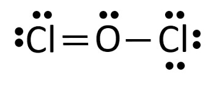
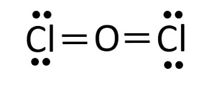
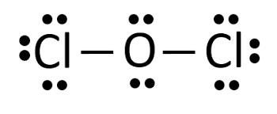
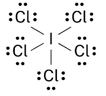

1) Which compound has the largest ionic character in the gas phase?
A) LiF*
B) ClF
C) HF
D) Cl2
The compound with the largest ionic character will be the one with the largest dipole.
The largest dipole moment will be between the two elements that have the largest difference in electronegativity. Generally speaking the elements with the largest difference in electronegativity will be furthest on the periodic table. However, you should remember that hydrogen has an electronegativity that is around that of metalloids. In other words, it is low for a nonmetal.
2) Which of the following shows the best Lewis structure for NOF?
A)
B)
C)
D) *
3) Place the following bonds in order of increasing dipole moment.
Si-P Si-Cl Si-S
A) Si-P < Si-S < Si-Cl*
B) Si-Cl < Si-S < Si-P
C) Si-Cl < Si-P < Si-S
D) Si-P < Si-Cl < Si-S
The bond with the lowest dipole moment will be the between elements closest on the periodic table. Since Si and P are the closest on the periodic table, they will have the lowest dipole moment. Since Si and S are the next closest, they will have the second to lowest dipole moment. Si and Cl are the furthest on the periodic table, so they will have the largest dipole moment.
4) Identify the weakest bond.
A) All bonds are the same strength
B) Single covalent bond*
C) Triple covalent bond
D) Double covalent bond
Triple bonds are stronger than double bonds, which are stronger than single bonds.
5) Which of the following bonds is least polar?
A) HCl
B) H-F
C) HBr
D) H-I*
The least polar bond will be the one with the smallest dipole moment.
The smallest dipole moment will be between the two elements that have the smallest difference in electronegativity. Generally speaking the elements with the smallest difference in electronegativity will be closest on the periodic table. However, you should remember that hydrogen has an electronegativity that is around that of metalloids. In other words, it is low for a nonmetal.
6) A double covalent bond contains how many electrons?
A) 2
B) 6
C) 4*
D) 5
A single covalent bond contains 2 shared electrons. A double covalent bond contains 4 shared electrons. A triple covalent bond contains 6 shared electrons.
7) Which of the following shows the best Lewis structure for BH3?
A) *
B)
C)
D)
8) Which of the following elements is the most electronegative.
A) Fluorine*
B) Nitrogen
C) Carbon
D) Oxygen
The trend for electronegativity is that it increases as you go up and to the right on the periodic table. However, noble gasses have an electronegativity of approximately zero, so fluorine has the highest electronegativity. Thus in this case, fluorine is the most electronegative.
9) Which of the following shows the best Lewis structure for OCl2?
A)
B) 
C) 
D) *
Oxygen has 6 valence electrons and chlorine has 7 valence electrons. Both oxygen and chlorine must have an octet. is the only structure with the correct number of electrons (6 + 7 + 7 = 20), where both oxygen and chlorine have an octet.
10) Which of the following shows the best Lewis structure for ICl5?
A)
B)
C) 
D) *
I has 7 valence electrons, and Cl has 7 valence electrons. I can get more than an octet because it is below the 2nd period. Chlorine will only get an octet because it is not the central atom. The formal charges need to be as close to zero as possible. is the only structure that contains the correct number of electrons (7 x 6 = 42) where all the formal charges are zero.
11) Which of the following shows the best Lewis structure for CH3OH?
A)
B)
C)
D) *
12) Which of the following shows the best Lewis structure for N2H4?
A)
B)
C) *
D)
13) Is SF6 polar or nonpolar?
A) Polar
B) Nonpolar*
Since SF6 is octahedral (which is a symmetrical shape), the electronegativities of the six fluorines balance out and SF6 is nonpolar.
14) What is the VSEPR shape (electron domain geometry) of PF5?
A) Trigonal planar
B) Trigonal bipyramidal*
C) Tetrahedral
D) Octahedral
Since the Lewis structure of PF5 has 5 electron domains, the VSEPR shape (electron domain geometry) of PF5 is trigonal bipyramidal.
15) Which of the following compounds is polar?
A) SiS2
B) O2
C) IF5*
D) PF5
IF5 is square planar shaped which is not a symmetrical shape, thus IF5 will be polar.
16) Use the molecular orbital diagram shown below to determine which of the following are the paramagnetic (there may be more than one answer).
A) NC*
B) C2+*
C) NC-
D) C2
Step 1: Count the number of valence electrons in the molecule. C2+: 7 valence electrons C2: 8 valence electrons NC: 9 valence electrons NC-: 10 valence electrons Step 2: Fill in the molecular orbital diagram from the bottom up, but make sure to follow Hund's rule (one electron in each orbital in degenerate orbitals before a second with an opposing spin) when filling pi molecular orbitals. Step 3: Determine if there are any unpaired electrons in the molecular orbital diagram. C2+: 7 valence electrons, and odd numbers will always have unpaired electrons = paramagnetic C2: 8 valence electrons, the pi 2p orbitals get filled, leaving no unpaired electrons = diamagnetic NC: 9 valence electrons, and odd numbers will always have unpaired electrons = paramagnetic NC-: 10 valence electrons, the last 2 electrons go into sigma 2p orbital filling it, which means there are no unpaired electrons = diamagnetic
17) What is the molecular shape of BF3?
A) Trigonal planar*
B) bent
C) Tetrahedral
D) Linear
Since the Lewis structureof BF3 has 3 electron domains, none of which are lone pairs, the molecular shape of BF3 is trigonal planar.
18) Use the molecular orbital diagram shown below to determine which of the following are the MOST stable.
A) NeF+
B) OF2-
C) F22+*
D) O2-
Step 1: Count the number of valence electrons in the molecule. F22+: 12 valence electrons O2-: 13 valence electrons NeF+: 14 valence electrons OF2-: 15 valence electrons Step 2: Fill in the molecular orbital diagram from the bottom up, but make sure to follow Hund's rule (one electron in each orbital in degenerate orbitals before a second with an opposing spin) when filling pi molecular orbitals. Step 3: Determine the bond order. Since after 10 valence electrons, the rest go into anti-bonding orbitals, the lowest number of electrons will have the highest bond order. Bond order = (electrons in bonding orbitals - electrons in antibonding orbitals)/2 Bond order for F22+: (8-4)/2 = 2 Bond order for O2-: (8-5)/2 = 1.5 Bond order for NeF+: (8-6)/2 = 1 Bond order for OF2-: (8-7)/2 = 0.5 Since F22+ has the highest bond order, it will be the MOST stable.
19) Which orbitals overlap in the carbon-hydrogen bonds in C2H4?
A) Two p orbitals
B) sp2 and s*
C) sp3 and s
D) sp and s
Step 1) Draw the Lewis structure for C2H4. Step 2) Count the number of electron domains on one of the carbons. There are 3 electron domains on each carbon. Step 3) Determine the hybridization of one of the carbons. Since there 3 are electron domains, it is sp2 hybridized. Step 4) Since the hydrogens only have an s orbital, the bond is between a sp2 hybridized orbital and an s orbital, thus (sp2 and s) is the answer.
20) What is the VSEPR shape (electron domain geometry) of PF3?
A) Linear
B) Bent
C) Trigonal planar
D) Tetrahedral*
Since the Lewis structure of PF3 has 4 electron domains, the VSEPR shape (electron domain geometry) of PF3 is tetrahedral.
21) Use the molecular orbital diagram shown below to determine which of the following are the MOST stable.
A) B2-
B) NC+
C) C22-*
D) BC2-
Step 1: Count the number of valence electrons in the molecule. B2-: 7 valence electrons NC+: 8 valence electrons BC2-: 9 valence electrons C22-: 10 valence electrons Step 2: Fill in the molecular orbital diagram from the bottom up, but make sure to follow Hund's rule (one electron in each orbital in degenerate orbitals before a second with an opposing spin) when filling pi molecular orbitals. Step 3: Determine the bond order. Since after 4 valence electrons, the rest go into bonding orbitals, the highest number of electrons will have the highest bond order. Bond order = (electrons in bonding orbitals - electrons in antibonding orbitals)/2 Bond order for B2-: (5-2)/2 = 1.5 Bond order for NC+: (6-2)/2 = 2 Bond order for BC2-: (7-2)/2 = 2.5 Bond order for C22-: (8-2)/2 = 3 Since C22- has the highest bond order, it will be the MOST stable.
22) Which of the following compounds is nonpolar?
A) SiF4*
B) H2O
C) NH3
D) CHF3
SiF4 is tetrahedral shaped, which is a symmetrical shape. That means the fluorines electronegativities will balance out and SiF4 will be nonpolar.
23) Give the molecular shape for KrF4
A) Linear
B) Tetrahedral
C) Square pyramidal
D) Square planar*
Step 1: Draw the Lewis Structure. Step 2: Count the number of electron domains: the number of lone pairs and number of atoms bonded to Kr. You should get 6 electron domains, of which 2 are lone pairs. 6 electron domains and 2 are lone pairs corresponds to a square planar molecular shape.
24) What is the molecular shape of SiO2?
A) Tetrahedral
B) Linear*
C) bent
D) Trigonal planar
Since the Lewis structure of SiO2 has 2 electron domains, none of which are lone pairs, the molecular shape of SiO2 is linear.
25) How many grams of LiF can be formed from 1.73 moles of BF3? Assume an excess of Li2SO3.
2 BF3 + 3 Li2SO3 ➞ B2(SO3)3 + 6 LiF
A) 135 g*
B) 0.200 g
C) 15.0 g
D) 1.99 g
To determine the grams of LiF formed from 1.73 moles of BF3, we need to use the balanced equation and the molar masses of the compounds involved.
From the balanced equation: 2 BF3 + 3 Li2SO3 ➞ B2(SO3)3 + 6 LiF
Using the stoichiometric ratio between BF3 and LiF (from the balanced equation), we find: 2 moles of BF3 produce 6 moles of LiF.
Now, we can calculate the mass of LiF: Molar mass of LiF: Li: 6.941 g/mol F: 18.998 g/mol (one F atom) Total molar mass of LiF: 6.941 + 18.998 = 25.939 g/mol
Mass of LiF = Moles of LiF × Molar mass of LiF = 5.19 moles × 25.939 g/mol = 135 g
26) What is the theoretical yield, in moles of CO2, from the reaction of 15.1 moles of C2H6 with 21.7 moles of O2?
2 C2H6 + 7 O2 ➞ 4 CO2 + 6 H2O
A) 12.4 moles*
B) 8.63 moles
C) 38.0 moles
D) 30.2 moles
To determine the theoretical yield of CO2, we need to compare the moles of C2H6 and O2 and their respective stoichiometric coefficients in the balanced equation. The reactant that produces the least amount of CO2 based on the stoichiometry will limit the amount of CO2 produced.
From the balanced equation: 2 C2H6 + 7 O2 ➞ 4 CO2 + 6 H2O
Moles of C2H6 = 15.1 moles Moles of O2 = 21.7 moles
To determine the limiting reactant, we compare the the amounts of product we can produce from each reactant.
The stoichiometric ratio between C2H6 and CO2 is 2:4. This means that 2 moles of C2H6 react to produce 4 moles of CO2.
The theoretical yield of CO2 based on the C2H6 being the limiting reagent: Moles of limiting reactant (C2H6) × Stoichiometric coefficient of CO2 = 15.1 moles × (4 mol CO2 / 2 mol C2H6) = 30.2 moles CO2
The stoichiometric ratio between O2 and CO2 is 7:4. This means that 7 moles of O2 react to produce 4 moles of CO2.
The theoretical yield of CO2 based on the O2 being the limiting reagent: Moles of limiting reactant (O2) × Stoichiometric coefficient of CO2 = 21.7 moles × (4 mol CO2 / 7 mol O2) = 12.4 moles CO2
Since assuming O2 is the limiting reagent produces a lower yield, O2 is actually our limiting reactant.
Therefore, the theoretical yield of CO2 from the given reaction is approximately 12.4 moles CO2.
27) What is the limiting reactant when 9.42 g of B2Br6 react with 16.3 g of HNO3?
B2Br6 + 6 HNO3 ➞ 2 B(NO3)3 + 6 HBr
A) B(NO3)3
B) HBr
C) B2Br6*
D) HNO3
To determine the limiting reactant, we need to compare the amount of product that can be formed from each reactant.
First, let's calculate the moles of each reactant: Molar mass of B2Br6 = 2 * (10.81 g/mol of B) + 6 * (79.90 g/mol of Br) = 370.48 g/mol Moles of B2Br6 = 9.42 g / 370.48 g/mol = 0.0254 mol
Molar mass of HNO3 = 1 * (1.01 g/mol of H) + 1 * (14.01 g/mol of N) + 3 * (16.00 g/mol of O) = 63.02 g/mol Moles of HNO3 = 16.3 g / 63.02 g/mol = 0.259 mol
Next, we need to compare the mole ratios between B2Br6 and HNO3 in the balanced equation: From the equation, we see that the mole ratio between B(NO3)3 and B2Br6 and is 2:1. The mole ratio between B(NO3)3 and HNO3 is 2:6.
So, using the mole ratios, we can determine the amount of B(NO3)3 that can be formed:
Moles of B(NO3)3 formed assuming B2Br6 is the limiting reactant = 0.0254 mol B2Br6 * (2 mol B(NO3)3 / 1 mol B2Br6) = 0.0532 mol B(NO3)3
Moles of B(NO3)3 formed assuming HNO3 is the limiting reactant = 0.259 mol HNO3 * (2 mol B(NO3)3 / 6 mol HNO3) = 0.0847 mol B(NO3)3
Based on the mole ratios, we can see that B2Br6 is the limiting reactant because it forms less moles of B(NO3)3 compared to the moles formed by HNO3.
Step 1) First balance the hydrogen on each sides by finding the least common multiple of8 and 2. Step 2) Next balance the carbon on each side. Step 3) Finally balance the oxygen last (because it exists in its elemental form unbound to other atoms). If needed, first double all the other coefficients.
29) What is the limiting reactant when 12.9 moles of ZnS react with 11.4 moles of AlP?
3 ZnS + 2 AlP ➞ Zn3P2 + Al2S3
A) ZnS*
B) Zn3P2
C) Al2S3
D) AlP
To determine the limiting reactant, we need to compare the moles of each product we could produce from the moles of each reactant, assuming the other reactant is in excess. The reactant that produces fewer moles of product will be the limiting reactant.
From the balanced equation: 3 ZnS + 2 AlP ➞ Zn3P2 + Al2S3
The stoichiometric ratio between ZnS and AlP is 3:2. This means that 3 moles of ZnS react with 2 moles of AlP.
Moles of ZnS = 12.9 moles Moles of AlP = 11.4 moles
To determine the limiting reactant, we compare the moles of product we could produce from each reactant. Mols of Zn3P2 assuming ZnS is our limiting reactant (assuming AlP is in excess): Moles of ZnS x (1 mol Zn3P2 / 3 mol ZnS) = 12.9 moles x (1 / 3) = 4.30 Moles of Zn3P2
Mols of Zn3P2 assuming AlP is our limiting reactant (assuming ZnS is in excess): Moles of AlP x (1 mol Zn3P2 / 2 mol ZnS) = 11.4 moles x (1 / 2) = 5.70 Moles of Zn3P2
Since assuming ZnS was our limiting reactant produced fewer moles of product, ZnS is the limiting reactant.
30) What is the percent yield of the reaction if 18.8 g of Fe are produced when 14.7g of Al react with excess Fe2O3 according to the following reaction.
Fe2O3(s) + 2 Al(s) → Al2O3(s) + 2 Fe(s)
A) 37.8 %
B) 78.2 %
C) 61.8 %*
D) 128 %
To calculate the percent yield, we need to compare the actual yield to the theoretical yield and express it as a percentage.
Given: Mass of Fe produced = 18.8 g Mass of Al used = 14.7 g
First, we need to determine the theoretical yield of Fe based on the stoichiometry of the balanced chemical equation. From the balanced equation, we can see that the stoichiometric ratio between Fe2O3 and Fe is 1:2. Therefore, for every 1 mole of Fe2O3, we expect to produce 2 moles of Fe.
Molar mass of Fe = 55.85 g/mol Molar mass of Al = 26.98 g/mol
Theoretical yield of Fe = 14.7 g Al * (1 mol Al / 26.98 g Al) × (2 mol Fe / 2 mol Al) x (55.85 g Fe / 1 mol Fe) = 30.4 g Fe
Now, we can calculate the percent yield using the formula:
31) How many grams of KNO3 will react with 146 grams of H2CO3?
2 KNO3 + H2CO3 ➞ K2CO3 + 2 HNO3
A) 476 g*
B) 119 g
C) 44.8 g
D) 44.8 g
To determine the grams of KNO3 that will react with 146 grams of H2CO3, we need to convert the given mass of H2CO3 to moles and then use the balanced chemical equation to determine the stoichiometric ratio.
First, we calculate the moles of H2CO3: Molar mass of H2CO3 = 2(1.01 g/mol of H) + 12.01 g/mol of C + 3(16.00 g/mol of O) = 62.03 g/mol Moles of H2CO3 = Mass of H2CO3 / Molar mass of H2CO3 Moles of H2CO3 = 146 g / 62.03 g/mol Moles of H2CO3 ≈ 2.35 moles
From the balanced chemical equation: 2 KNO3 + H2CO3 ➞ K2CO3 + 2 HNO3
The stoichiometric ratio between H2CO3 and KNO3 is 1:2. This means that 1 mole of H2CO3 will react with 2 moles of KNO3.
Therefore, the moles of KNO3 that will react with 146 moles of H2CO3 is:
Moles of KNO3 = 2 × Moles of H2CO3
Moles of KNO3 = 2 × 2.35 moles Moles of KNO3 ≈ 4.71 moles
Finally, we calculate the grams of KNO3 using its molar mass: Molar mass of KNO3 = 39.10 g/mol + 14.01 g/mol + 3(16.00 g/mol) = 101.10 g/mol Grams of KNO3 = Moles of KNO3 × Molar mass of KNO3 Grams of KNO3 = 4.71 moles × 101.10 g/mol Grams of KNO3 ≈ 476 g
32) An unknown compound contains only carbon and hydrogen. When it undergoes combustion analysis, it produces 8.8020 g of CO2 and 3.6040 g of H2O. What is the empirical formula for the compound?
A) CH4
B) CH3
C) C2H4
D) CH2*
Step 1: Convert the grams of CO2 and H2O to moles of C and O. 8.80 g CO2 x \( \frac{1 mol CO_2}{44.01 g CO_2} \)x \( \frac{1 mol C}{1 mol CO_2} \) = 0.200 mol C 3.60 g H2O x \( \frac{1 mol H_2O}{18.016 g H_2O} \) x \( \frac{2 mol H}{1 mol H_2O} \) = 0.200 mol H
Step 2: Divide both mole amounts by the lower of the two numbers.
Step 3: Get the smallest whole number ratio of each mole amount. 1 mol C to 2 mol H


 *
* *
*


 *
*


 *
*

 *
*